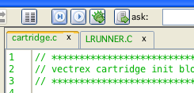

C-Main
C-Main
The C-Project directory structure template follows the following layout.
source
In general all your own C-sources and header files go here. Upon a project-compile command all *.c files within this directory and any subdirectory will be compiled.
build
All files (except the final bin file) that Vide produces of the source files will go here, following generated files are placed in a sub directory "lib":
*.i (gcc pre processed files)
*.s (assembler sources generated by gcc)
*.lst (list files generated by assembler)
*.rel (list files, relocatible object files generated by the assembler)
*.rst (link data files, generated by the linker)
Following generated files are placed "directly" under the "build" directory:
*.map (generated by the linker)
*.s19 (generated by the linker)
*.bin (generated by srec2bin)
bin
The final "*.bin" file executable on a vectrex and the generated *.cnt (contains symbol information for dissi) files are placed here.
lib
Precompiled "sources" go here (*.rel and corresponding *.lst files). These files will be linked to the project in the linking stage. These files can be thought of as "user libraries", which need not be compiled at every build, but can be linked to the final product.
E.g. YMPlayer routines might go here.
include
Include files for above mentioned "user library" routines.
overlay
An overlay which is placed in this directory and named "PROJECT_NAME.png" will load automatically when the binary file is executed in vecxi (some examples are included).
manual
A manual (pdf?) for the project can be placed here (example is included).
To compile the project use the "usual" build buttons:

build
 compile
compile
compiles the currently edited file only (no bin is created)
 build
build
builds the complete project (bin file is created, and vecxi started)
Actions/Errors/Warnings are displayed in the "Editor messages tab" at the bottom. If there is a "C" error, the line can be double clicked - and the cursor is placed in the corresponding "C" editor-line.
A more verbose output of compile messages can be found in the debug log.
Vedi was initially conceived to only support assembler programing. The "upgrade" to support "C" also was not as simple as one my believe. The editor "core" never was build in the mindset to be extremly open, or to support different formats.
That said - some features also work with "C" files.
Syntax highlighting
Is supported. The filetype is determined via the file extension.
"assi" syntax highlighting will done for files ending with:
.template
.s
.asm
.as9
.a69
.inc
.i (only when not in a "C" project)
"C" syntax highlighting will done for files ending with:
.c
.h
.i (when in a "C" project)
Note:
I did not do a special syntax highlighting for ASXXXX assembler files, they also use assi syntax highlighting (because they are "*.s" files). These files will be colored "funny" :-).
include files
Double click on an include file opens it in a new editor.
Functions, macro definitions, variables
Shift left double click or middle double click jumps to the definition.
Also the navigator lists the entries for the current edited file.
The support for that function was "hacked" together in an hour. It is not as good as its assembler "brother". Especially for variables it is not that viable. The last found "variable" definition wins. This means, if you have several functions that define a local variable with the same name, vedi will only recognize the variable which it encountered last.
Breakpoints
Supported.
Pretty print
Tiny little bit supported.
Watches
Not supported - yet!